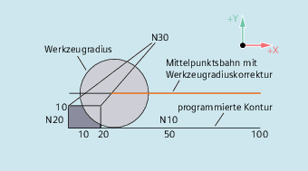

In bestimmten geometrischen Sonderfällen werden gegenüber der bisherigen Realisierung mit eingeschalteter Kollisionsüberwachung für An- und Abfahrsatz, spezielle erweiterte An- und Abfahrstrategien beim Aktivieren bzw. Deaktivieren der Werkzeugradiuskorrektur benötigt. So kann z. B. eine Kollisionsüberwachung dazu führen, dass ein Abschnitt auf der Kontur nicht vollständig bearbeitet wird, siehe folgendes Bild:
Abfahrverhalten bei G460
G460
G461
G462
| Wie bisher (Einschalten der Kollisionsüberwachung für An- und Abfahrsatz) |
| Einfügen eines Kreises im WRK-Satz, wenn kein Schnittpunkt möglich ist, dessen Mittelpunkt im Endpunkt des nicht korrigierten Satzes liegt, und dessen Radius gleich dem Werkzeugradius ist. Bis zum Schnittpunkt wird mit Hilfskreis um den Konturendpunkt (also bis Konturende) bearbeitet. |
| Einfügen einer Geraden im WRK-Satz, wenn kein Schnittpunkt möglich ist, der Satz wird durch seine Endtangente verlängert (Standardeinstellung) Bearbeitet wird bis zur Verlängerung des letzten Konturelements (also bis kurz vor Konturende). |
| Hinweis |
Das Anfahrverhalten ist symmetrisch zum Abfahrverhalten. Das An- bzw. Abfahrverhalten wird vom Zustand des G-Befehls im An- bzw. Abfahrsatz bestimmt. Das Anfahrverhalten kann deshalb unabhängig vom Abfahrverhalten eingestellt werden. |
Im Folgenden wird immer nur die Situation bei Deaktivieren der Werkzeugradiuskorrektur dargestellt. Das Verhalten beim Anfahren ist dazu völlig analog.
| Programmcode | Kommentar |
|---|---|
| G42 D1 T1 | ; Werkzeugradius 20mm |
| ... | |
| G1 X110 Y0 | |
| N10 X0 | |
| N20 Y10 | |
| N30 G40 X50 Y50 |
| Programmcode | Kommentar |
|---|---|
| N10 $TC_DP1[1,1]=120 | ; Werkzeugtyp Fräser |
| N20 $TC_DP6[1,1]=10 | ; Werkzeugradius |
| N30 X0 Y0 F10000 T1 D1 | |
| N40 Y20 | |
| N50 G42 X50 Y5 G461 | |
| N60 Y0 F600 | |
| N70 X30 | |
| N80 X20 Y-5 | |
| N90 X0 Y0 G40 | |
| N100 M30 |
Siehe auch:
Weiches An- und Abfahren mit erweiterten Abfahrstrategien (G460, G461, G462): Weitere Informationen
Weiches An- und Abfahren (G140 bis G143, G147, G148, G247, G248, G347, G348, G340, G341, DISR, DISCL, DISRP, FAD, PM, PR)